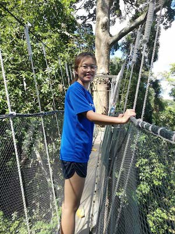

|  | FOO Sze HuiHonours Student
Email: e0053336(AT)u.nus.edu |
Background
Science and animals are the two things that never fail to appease my curiosity since young. Driven by this passion, I pursued a Diploma in Veterinary Bioscience at Ngee Ann Polytechnic (NP). Then, influenced by a marine biologist who came to share his work at NP, I enrolled in NUS for Life Sciences with specialisation in Environmental Biology, so that I can follow his path. I endeavour to be a marine biologist--to do science, explore the mysterious ocean, see interesting phenomena while on the job! Of course, being a researcher is not all roses but I’m slowly learning and growing to embrace the non-rosy!
Over the years, I have grown fond of echinoderms for their extraordinary forms and biology. I did an undergraduate research project on feather stars (Echinodermata: Crinoidea), clarifying the identities of feather stars thought to be in the genus Heterometra in Singapore using morphological and molecular data. I hope to continue studying them, and perhaps expand the scope to other echinoderms such as sea cucumbers and sea urchins in the future.
Honours project
My project aims to study how corals in Singapore respond to different aspects of sediment stress. Coral communities in Singapore are facing high levels of sedimentation due to activities such as land reclamation and dredging. Studies have shown that elevated levels of sedimentation can impair photosynthetic function of corals and have led to the loss of corals in reef areas including Singapore. Despite the detrimental impacts, the mechanism of how sediment affects coral health remains poorly understood due to the complexities of both sediment as well as corals. Natural sediment consists of a multitude of components while the response exhibited by corals are normally a combined outcome of both the coral host and the algal symbiont. Thus, my study aims to divide sediment stress into organic and inorganic aspect and determine their impacts on the coral holobiont by analysing their gene expression patterns and photo-physiological responses.